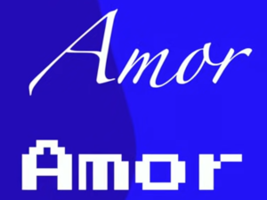

Como funciona a tipográfia?
A ideia principal da tipografia é melhorar a visualização e a legibilidade das letras.
Com o passar dos anos a tipografia evoluiu e hoje um outro objetivo que ela possui é a de encontrar a melhor forma de escrita para cada tipo de contexto, em que seja possivel transmitir a emoção das ontes correta para cada tema. Exemplo: Representação da palavra amor.

O conteúdo aqui descrito foi obtido atravès da aula de HTML e CSS do Professor Gustavo Guanabara no YouTube, para maiores informações assista o curso na íntegra: